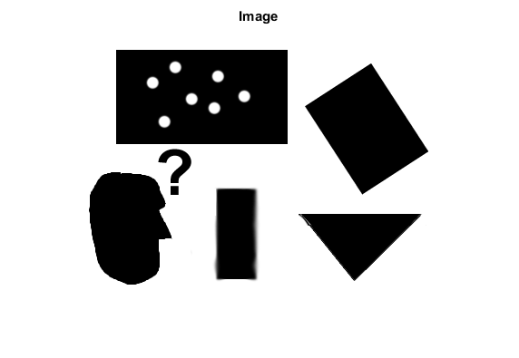
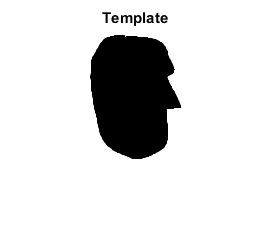
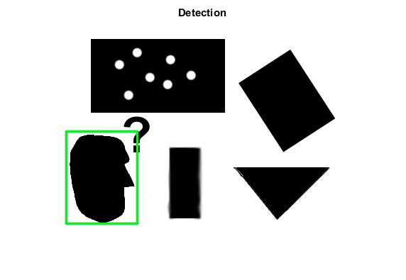

Generalized Hough transform
This program demonstrates arbitrary object finding with the Generalized Hough transform.
Sources:
Contents
Input images
Image to search
img = cv.imread(fullfile(mexopencv.root(),'test','pic1.png'), 'Flags',0); imshow(img), title('Image')
Template
templ = cv.imread(fullfile(mexopencv.root(),'test','templ.png'), 'Flags',0); imshow(templ), title('Template')
Create Generalized Hough transform object
if true alg = cv.GeneralizedHoughBallard(); else alg = cv.GeneralizedHoughGuil(); end
Feed it the template
alg.setTemplate(templ);
Detect the template in the image
[positions,votes] = alg.detect(img);
Show results
out = cv.cvtColor(img, 'GRAY2RGB'); for i=1:numel(positions) pos = positions{i}(1:2); scale = positions{i}(3); angle = positions{i}(4); % rotated rectangle vertices rrect = struct('center',pos, ... 'size',[size(templ,2) size(templ,1)].*scale, 'angle',angle); pts = cv.RotatedRect.points(rrect); % draw rotated box opts = {'Color',[0 0 255], 'Thickness',2, 'LineType','AA'}; if true out = cv.polylines(out, {num2cell(pts,2)}, 'Closed',true, opts{:}); else out = cv.line(out, pts(1,:), pts(2,:), opts{:}); out = cv.line(out, pts(2,:), pts(3,:), opts{:}); out = cv.line(out, pts(3,:), pts(4,:), opts{:}); out = cv.line(out, pts(4,:), pts(1,:), opts{:}); end % draw upright bounding box rect = cv.RotatedRect.boundingRect(rrect); out = cv.rectangle(out, rect, 'Color',[0 255 0], 'Thickness',2); end imshow(out), title('Detection')